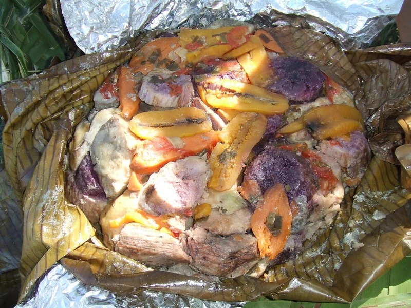

Quelques oignons verts ou quelques rondelles d'oignons blanc
Du lait de coco fraîchement pressé
Sel, poivre
SALADE DE CERF
Ingrédients
2,5 kg de viande de cerf (filet ou rôti)
1 bouquet de coriandre
1 paquet d'oignons verts (ciboulette)
1 oignon sec
3 ou 4 gousses d'ail
Des citrons (ou jus style Pulco)
Huile (n'importe laquelle sauf huile d'olives)
Sauce soja
SALADE DE CREVETTE AU LAIT DE COCO
Ingrédients
1 noix de coco
Une dizaine de crevettes
1/3 d'une mangue
Un reste de riz
De l'huile d'olive
De la coriandre
BANANE AU JAMBON
Ingrédients
6 bananes
6 tranches de jambon
Du gruyère râpé
De la crème fraîche
350 g de blé cuit
NEM AU PORC
Ingrédients
200 g de filet de porc ou blanc de poulet
20 g de champignons noir
200 g de vermicelles de soja
300 g de germes de soja frais ou en boîte
3 carottes râpées ou taillées en julienne
1 oignon
De la coriandre fraîche
Une ciboulette chinoise
Sel, poivre
Plats
LANGOUSTE GRATINÉE
Ingrédients
1 belle langouste fraîche (ou 2 petites)
4 cuillères à soupe d'huile d'olive
Du jus d'un citron
½ gousse d’ail écrasée
Du persil chinois et/ou herbes de Provence
Sel et poivre
POULET SOYO
Ingrédients
4 hauts de cuisses de poulet
1 cuillère à soupe d'eau chaude
1 oignon
8 centilitres de kikkoman (sauce soja)
2 gousse d'ail
1 cuillère à café de poivre
2 cuillères à café de gingembre en poudre
1 cuillère à café d'oignon vert
1 cuillère à soupe de Maïzena
2 cuillères à soupe d'huile d'olive

BOUGNA AU POULET
Ingrédients
Une grosse marmite
4 feuilles de bananier
1 gros poulet du pays
1 igname
4 patates douces
4 bananes poingo
1 taro
1/4 de citrouilles
3 grosses tomates
1 igname mauve
6/8 cocos pour le lait de cocos
1 botte d'oignons et du persil
1 bouquet garni
Sel, poivre
BROCHETTES POULETS
Ingrédients
4 filets de poulet
2 oignons
2 poivrons
Pour la marinade :
1 cuillère(s) à soupe de miel liquide
Du jus de citron
22 cuillères à soupe de sauce soja
6 cuillères à soupe d'huile d'olive
2 gousses d'ail
Sel, Poivre
BAMI
Ingrédients
1 paquet de vermicelles de soja
4 blancs de poulet ou haut de cuisse
4 carottes
1 chou blanc
250 g haricots verts
4 oignons
4 gousses d’ail
20 cl de sauce soja claire
10 cl de sauce de soja foncée
10 cl d’huile neutre
Sel, poivre
200 g de crevettes coupées en morceaux
100 g de crevettes sèches
PORC AU SUCRE
Ingrédients
1,2 kilo de poitrine de porc fraîche
1/4 de litre de soyo (Kikkoman)
60 g de sucre
1 gousse d’ail
1 ou 2 oignons selon leur taille
1 paquet d’oignons verts ou cives
1 cuillère à café de nuoc-mam
1 botte de coriandre
Desserts
SORBET À LA MANGUE
Ingrédients
1 kg de mangue mûre
150 g de sucre en poudre
100 g d'eau (10 cl)
1/2 citron jaune
PO'E CITROUILLE
Ingrédients
1 Kg de citrouille
2 boites de lait de coco ou 2 coco rappé et pressé
1 cl de rhum
500 g de farine de manioc
100 g de sucre
1 ou 2 bâton de vanille
BEIGNET MERVEILLES
Ingrédients
375 g de farine
1,5 oeuf
Arôme Armagnac, fleur d'oranger, rhum ou vanille
1,5 pincée de sel ou sel fin
Sucre en poudre ou sucre semoule
75 g de beurre
1 verre d'eau
1,5 paquet de sucre vanillé
1,5 l d'huile de friture
GÂTEAU ANANAS
Ingrédients
7 rondelles d'ananas
150 g de farine
3 oeufs
1 sachet de sucre vanillé
150 g de sucre
150 g de beurre
1 sachet de levure
150 g de sucre, pour le caramel
GÂTEAU TAHITIEN
Ingrédients
250 g de chocolat noir
180 g de sucre
120 g de crème liquide
5 œufs
150 g de farine
1/2 citron
125 g de noix de coco
1 sachet de sucre vanillé
PO'E BANANE
Ingrédients
8 bananes
Amidon (farine de tapioca)
3 gousses de vanille
Lait de coco
Sucre en poudre ou sucre semoule
Cuisine Calédonienne
Que vous soyez en Nouvelle-Calédonie, ou en Métropole, originaire du Cailloux
ou non, Cuisine Calédonienne vous propose les recettes typiques de la Nouvelle-Calédonie.